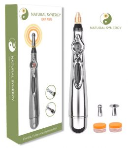

Congratulations on ordering your EPA Pen!
Your EPA Pen order is being processed and will be shipped to you as soon as possible.

IMPORTANT: Please watch the video below and read through the instructions BEFORE you start using the EPA Pen.
Are you a Natural Synergy member? If not, we ecourage you to check out our program HERE. This shows you how to find all 400 acupressure points in the body, and gives you the exact steps to relieving over 150 different pains and ailments. Without this information, the pen can only be used as a portable TENS device.
EPA Pen Instructions
- Install one ‘double-A’ (AA) battery (not included) by unscrewing the bottom tip of the handle and inserting the male end of the battery head first.
- You can choose between two different pen tips.
- The smaller, ball ended probe is ideal for acupoints between bones, tendons, or small spaces that need more precision.
- The wider, flatter dome probe is for more sensitive areas or if you’re unsure of the exact location of the point. It’s also good for when you’re using the EPA Pen as a TENS machine.
- Turn on the device by holding the handle with the tip up and pressing the lower half of the black toggle button. Press the button again and the number one will appear on the display. Repeat to increase the power setting up to 9. Press the top half of the button to decrease back to 1.
- Always start treatment with the device on level 1. Only increase the intensity if it feels comfortable for you. NOTE: For some people, even level 1 may be too intense. In that case, you can use the pen when it is switched off as a perfect way to apply prolonged pressure to acupoints without causing fatigue to your hands.
- NOTE: Increasing the power level will cause the pen to create a more intense micro current which you may feel in your hand. If this occurs, please grip the pen with your whole hand creating a wider surface area to disperse the effect. This pulsing sensation is completely normal and not a fault of the pen. The EPA pen relies on your body’s own static electricity to make a circuit which is based on the principle of single-phase electricity. The micro current flows through your body, back up your arm, and completes the circuit at the contact point. If you would like to use the pen on others, you will need to put your hand on their skin to close the circuit.
- To turn off, set the display to 0. It will automatically turn itself off.
- If you would like to change the probe tips, please turn the pen off first.
- When using the EPA pen, you can use a small amount of contact gel on the acupoint or pain area before applying electro-acupressure or using it as a TENS machine. This is not necessary though – you can use the EPA pen without any gel also.
- Apply pressure with the pen for 1-3 minutes on each side of the body.
- You can also use the pen as a probe in OFF mode to easily apply pressure without causing fatigue to your fingers.
- Never use the EPA pen if you have a heart pacemaker, pulse regulator, artificial heart, lungs, or other life-sustaining electronic medical devices.
- Never use in the shower, bath, pool or in high humidity.
- Do not use on or near any mucus membranes or in or near any orifice of the body.
- Keep away from children and pets. Do not use on anyone who is unable to speak or is unconscious.
- Consult with a doctor before using if you are pregnant, have a serious heart condition, or any other life-threatening injury.
If you have any questions at all, please contact our support desk.
Yours in health and happiness,
Emily J Parker